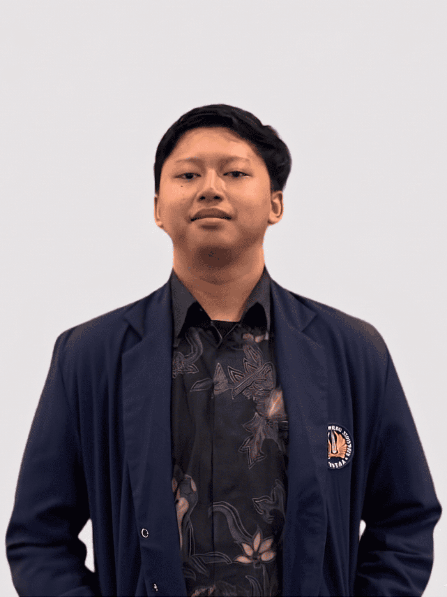
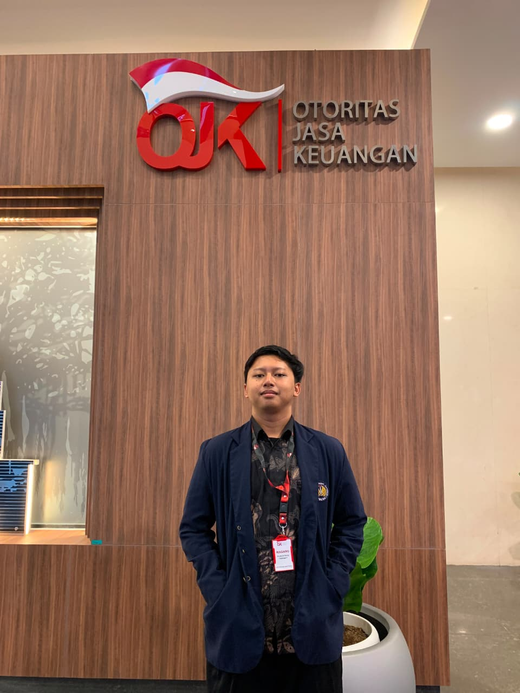
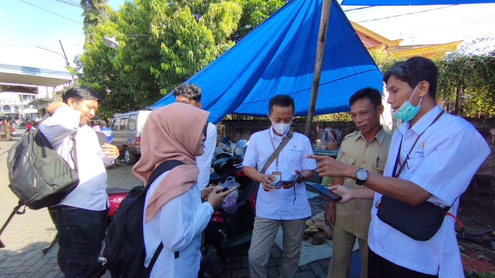
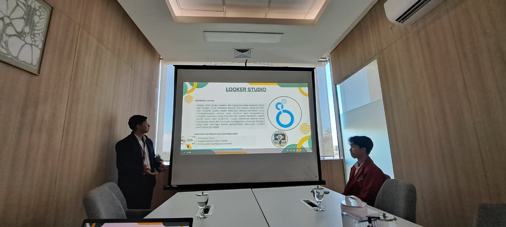

About Me
Saya Achmad Ryvaldy, Lulusan baru program studi Sains Data dari Universitas Negeri Surabaya yang antusias dalam mengolah data mentah menjadi keputusan strategis berbasis data. Saya memiliki pengalaman praktik langsung di OJK Jawa Timur dan BPS Tulungagung, serta pernah memimpin Divisi Keilmuan di HIMASADA. Penelitian skripsi saya menerapkan machine learning untuk memprediksi komoditas pertanian di wilayah Jawa Timur. Terbuka untuk peluang karir sebagai Data Analyst atau Data Scientist, kolaborasi riset, dan peluang karir lainnya. Selalu antusias untuk menjalin koneksi dan berdiskusi seputar dunia data.
Programming Languages
Tools & Environment

Selected Works
Work Experience

Badan Pusat Statistik
Tulungagung, Jawa Timur
Pengolahan Data
- Memperbarui dan memvalidasi data sekitar 200 UMKM.
- Mensinkronisasi data sekolah SD hingga SMA.
- Melakukan pembersihan dan verifikasi data bisnis lintas 9 kecamatan.

Otoritas Jasa Keuangan
Surabaya, Jawa Timur
Asisten Data
- Membuat 3 dashboard pelaporan (Perbankan, PM, PPDP & PVML).
- Mengolah dan menstrukturisasi data mentah.
- Merancang visualisasi data interaktif.
Organizational Experience
Kepala Divisi Keilmuan
Himpunan Mahasiswa Sains Data
- Mengkoordinasikan tim divisi dalam merealisasikan target program kerja.
- Mengoordinasikan Webinar Nasional TENAR (100 peserta) dari persiapan hingga pelaksanaan.
- Mengawasi 3 sie kepanitiaan (±30 orang) dan jalannya ACTION, kompetisi data mahasiswa.
- Kepala Sie Perlengkapan & IT mengelola logistik panitia dan setup OBS/Zoom.
Staf Divisi Keilmuan
Himpunan Mahasiswa Matematika
- Merancang program klub akademik yang mewadahi karya tulis ilmiah dan pemrograman.
- Menjadi penanggung jawab lomba akademik tingkat SD yang mengatur pembagian peserta dan jadwal acara.
- Menjadi Kepala Sie Perlengkapan pengabdian masyarakat yang memastikan logistik tersedia tepat waktu.
- Mengelola Zoom & OBS sebagai Kepala Sie IT Webinar Wirausaha.